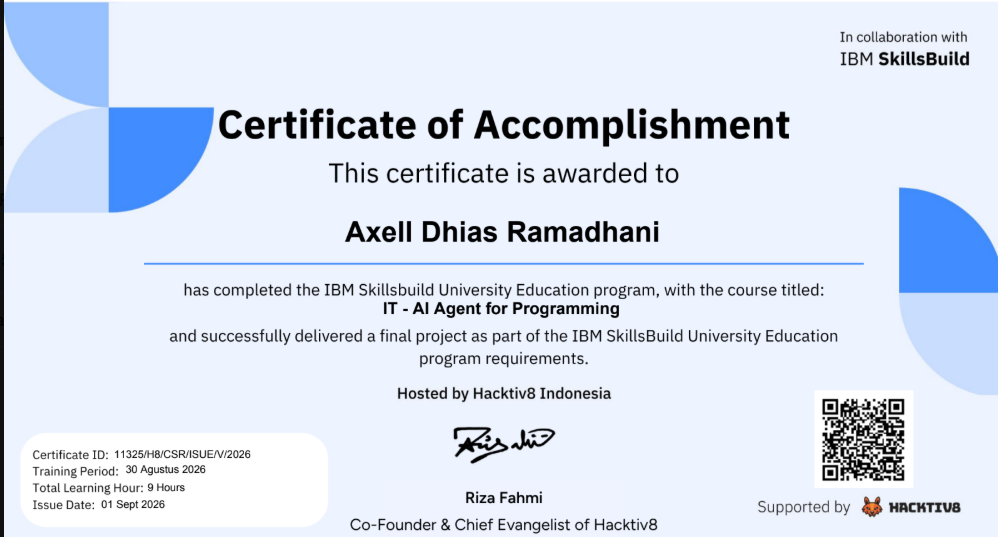

Frontend
Menyusun struktur halaman dan membuat antarmuka responsif.
HTML5CSS3Tailwind CSSJavaScript
TERBUKA UNTUK KESEMPATAN MAGANG
Halo, saya Axell Dhias Ramadhani, mahasiswa yang tertarik pada pengembangan web, desain antarmuka, dan teknologi. Saya senang belajar melalui proyek nyata dan terus mengembangkan kemampuan teknis.
01 / TENTANG SAYA
Saya sedang membangun fondasi yang kuat di bidang teknologi melalui pembelajaran, eksperimen, dan pengerjaan proyek.
Saya tertarik membuat website yang mudah digunakan, responsif, dan memiliki tampilan yang bersih. Dalam proses belajar, saya terbiasa mencari solusi, mencoba pendekatan baru, dan memperbaiki hasil berdasarkan evaluasi.
Bagian profil ini masih berupa template. Sesuaikan dengan pengalaman, tujuan karier, dan karakter kamu sendiri agar CV lebih autentik.
02 / KEAHLIAN
Menyusun struktur halaman dan membuat antarmuka responsif.
Mengembangkan proyek, mengelola kode, dan melakukan debugging.
Menerapkan proses belajar bertahap dari perencanaan sampai pengujian.
03 / PROYEK PILIHAN
Ganti tautan dan deskripsi di bawah dengan proyek yang benar-benar kamu kerjakan.
Landing page responsif dengan struktur semantik, styling Tailwind CSS, serta interaksi dasar menggunakan JavaScript.
Konsep aplikasi untuk menelusuri dan menampilkan informasi anime. Tambahkan fitur yang sudah berhasil kamu implementasikan.
Jelaskan masalah yang ingin diselesaikan, kontribusi kamu, teknologi yang dipakai, dan hasilnya.
04 / PENDIDIKAN
S1 Teknik Informatika
Fokus studi meliputi Struktur Data, Algoritma, Rekayasa Perangkat Lunak, dan Kecerdasan Buatan.
Hacktiv8 Indonesia & IBM SkillsBuild · 9 Jam Pelatihan
Menyelesaikan program edukasi dan berhasil mengumpulkan proyek akhir (Final Project) sesuai dengan kriteria kelulusan.

05 / KONTAK
Saya terbuka untuk diskusi, kolaborasi proyek, dan kesempatan magang yang relevan.